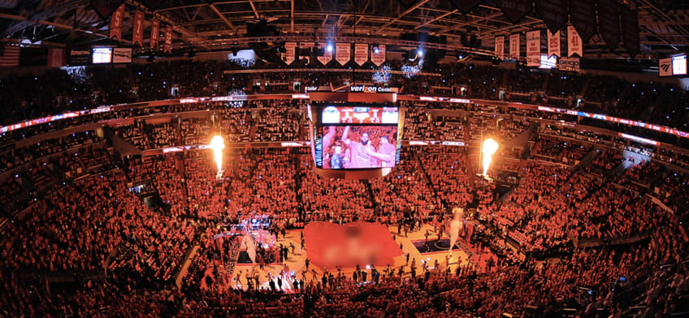

Washington Wizards - Fundada em 1961 como Chicago Packers, a equipe mudou seu nome para Washington Wizards em 1997. A franquia conquistou um título da NBA em 1978, quando estava sob o nome de Washington Bullets. Ao longo dos anos, teve alguns momentos de destaque, como as atuações de Wes Unseld, Elvin Hayes, e mais recentemente, Bradley Beal. A equipe tem focado na reconstrução, com novos jogadores e uma base jovem.
Elenco - Jordan Poole (#1), Kyle Kuzma (#33), Daniel Gafford (#21), Tyus Jones (#0), Corey Kispert (#25), Bilal Coulibaly (#5), Johnny Davis (#1), Jordan Goodwin (#0), Corey Kispert (#25).
Títulos NBA - 1 (1978)
Títulos Conferência - 4 (1971, 1975, 1978, 2014)
Estádio - Capital One Arena (20.356)
